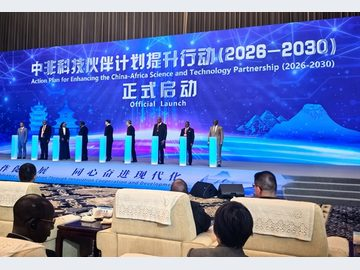
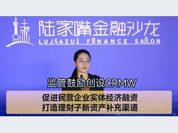
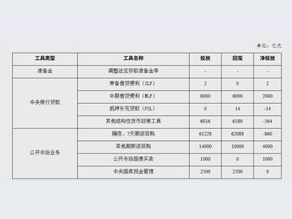

01
央行报告：将加力实施支持资本市场两项货币政策工具
新华社北京11月11日电（记者任军、吴雨）中国人民银行11月11日发布报告称，将拓展丰富中央银行宏观审慎与金融稳定功能，丰富完善工具箱…

新华社北京11月11日电（记者任军、吴雨）中国人民银行11月11日发布报告称，将拓展丰富中央银行宏观审慎与金融稳定功能，丰富完善工具箱…
央行发布2026年第三季度中国货币政策执行报告。其中提出，继续用好各类结构性货币政策工具，不断完善工具设计和管理…

为拓宽中低等级信用债发行渠道、纾解民营企业实体经济融资难题，监管部门鼓励银行在债券发行环节创设信用风险缓释凭证（CRMW）。

①与去年不同的是，多数银行在重点投向方面没有强调科技和绿色金融，更多看行业本身属性；
中证报中证网讯（记者 孟培嘉）作为扎根江苏的地方法人银行，江苏银行始终坚守服务城乡居民、服务中小企业、服务地方经济的初心使命…
新华社北京11月10日电（记者张千千）记者11月10日从国家开发银行获悉，今年1至10月，国开行服务传统产业改造升级、新兴产业培育壮大、未来产业前瞻布局…
2025年12月26日，国家发展改革委办公厅、工业和信息化部办公厅、国家能源局综合司三部门联合印发了《国家级零碳园区建设名单（第一批）》，共纳入52个园区…
王新伟代表省委、省政府向与会嘉宾表示欢迎。他说，在两国元首战略引领下，中俄新时代全面战略协作伙伴关系正在进入更有作为、更快发展的新阶段。

11月9日消息，天眼查数据显示，鞍钢股份有限公司发布铲斗等项目，发布时间为2026年11月9日。

11月11日，兴业证券首席宏观分析师段超在接受中国证券报·中证金牛座记者采访时表示，近期A股市场调整主要受海外风险因素扰动…